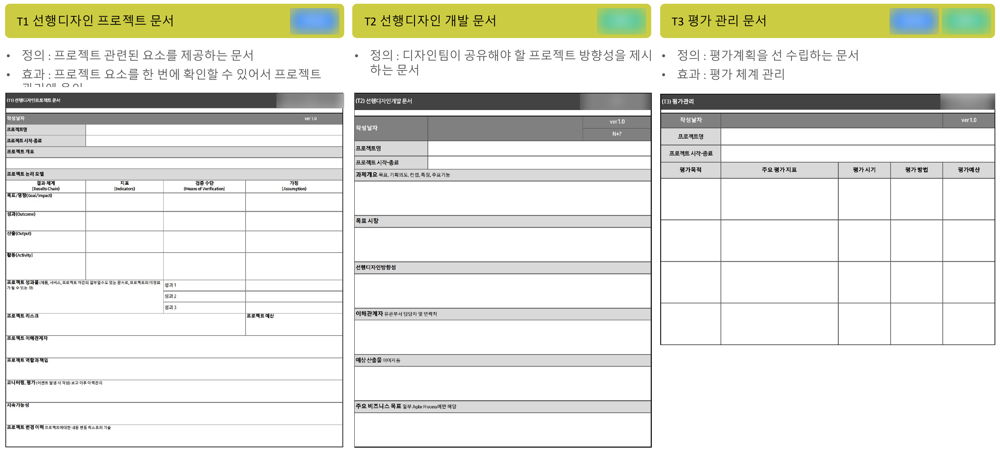
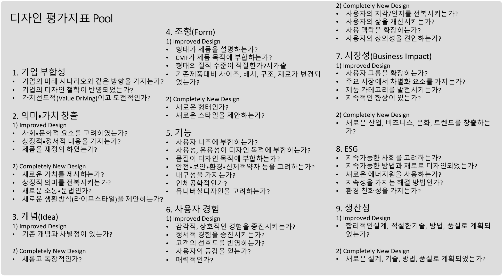

선행 디자인의 양산 연계를 위한 기준과 이관 자료
사업부와 전사 디자인 조직이 각자 진행하던 선행 디자인을 양산 단계로 연결하려면, 단계별 판단 기준과 이관 자료를 공통으로 정리할 필요가 있었습니다.
조직별로 진행되던 선행 디자인
사업성·타당성을 함께 볼 기준 필요
상품화 단계로 넘길 문서와 역할 정리 필요
해외 5개 기업 비교와 5단계 프로세스 제안
연구팀은 Dyson · Apple · 현대차 · LG · Philips 등 선행 디자인이 강한 기업의 조직·철학·개발 프로세스를 비교 분석하고, 사내 인터뷰로 현재 프로세스의 공백을 확인해 과제 기획부터 양산화 결정까지 5단계 흐름을 제안했습니다. 이 비교·제안은 팀 공동 작업이며, 제가 맡은 부분은 이를 운영 도구로 옮기는 툴킷 제작과 실무진 사용 관찰·수정입니다.

컨셉 리뷰 · 디자인 리뷰 · 양산화 결정 단계마다 검토 기준과 책임 역할을 명시해, 참여자들이 공통 기준으로 진행 여부를 판단할 수 있도록 했습니다.
해외 기업 비교는 공개된 자료를 근거로 한 조사이며, 각 기업의 내부 운영 방식을 직접 확인한 결과는 아닙니다.
도구 5종과 방법 5종으로 구성한 디지털 툴킷
제가 맡은 부분은 제안된 프로세스를 실무에서 쓸 수 있는 디지털 툴킷으로 옮기는 일이었습니다. 단계마다 작성할 문서(도구)와 검토·평가 방식(방법)을 정의하고, 계획·관리운영·상품화·소통협업·평가 영역에 배치했습니다.

표를 좌우로 밀어 전체 내용을 볼 수 있습니다.
| 구분 | 이름 | 쓰임 |
|---|---|---|
| T1 | 선행디자인 프로젝트 문서 | 프로젝트 관련 요소를 한 문서에서 확인하고 관리 |
| T2 | 선행디자인 개발 문서 | 디자인팀이 공유할 방향성을 제시하고 변동사항을 반영 |
| T3 | 평가 관리 문서 | 평가 계획을 먼저 세우고 평가 체계를 관리 |
| T4 | BMC (Business Model Canvas) | 비즈니스 핵심 요소를 한 장에 정리해 보고·소통 |
| T5 | 양산이관 및 완료 문서 | 사업부 이관·완료 시 작성해 개발 협의와 양산 감리에 활용 |
| M1 | 팀 내부 리뷰 | 프로젝트 밖 동료가 비평·검증 (평가 전 단계) |
| M2 | 외부 전문가 평가 | 다른 산업군 전문가의 관점으로 검증 |
| M3 | 내부 평가 | 사내 평가로 수용성·타당성·양산성 검증 (PoC 단계) |
| M4 | 가상의 사용자 평가 | 미래 페르소나를 만들어 시나리오 검증 |
| M5 | 디자인 평가지표 적용 | 9개 영역 평가 질문에서 과제에 맞는 지표를 골라 적용 |
9개 영역으로 나눈 디자인 평가 질문
Good Design, IDEA, Reddot, iF Design 심사 기준과 관련 연구를 바탕으로, 기업 부합성부터 생산성까지 9개 영역의 평가 질문을 구성하고, 일부 영역은 ‘향상된 디자인’과 ‘완전히 새로운 디자인’을 구분해 과제 성격에 맞게 적용하도록 했습니다.

실무진 워크숍에서 관찰한 사용 과정과 수정
실무진 4명이 참여한 워크숍에서 툴킷 사용 과정을 관찰하고, 피드백을 정리해 수정했습니다.
관찰에서 수정으로
워크숍에서는 도구와 방법을 Agile·Strategic·Visionary 세 가지 프로세스 유형에 대응시켜 사용해 보도록 했습니다. 나온 피드백을 정리해, 도구와 방법을 실제 프로세스 단계에 맞게 고쳤습니다.
이관 이후까지 고려하기
이관 후 실제 활용을 고려해 예상 산출물, 담당 역할, 활용 계획을 보완해 전달했습니다.
산출물
5단계 프로세스 · 도구 5종·방법 5종 · 9개 영역 평가 질문
4명 참여 · 관찰 기반 수정
실제 프로젝트 적용 이후의 운영 성과와 수정 전후의 사용성 차이는 측정하지 않았습니다.